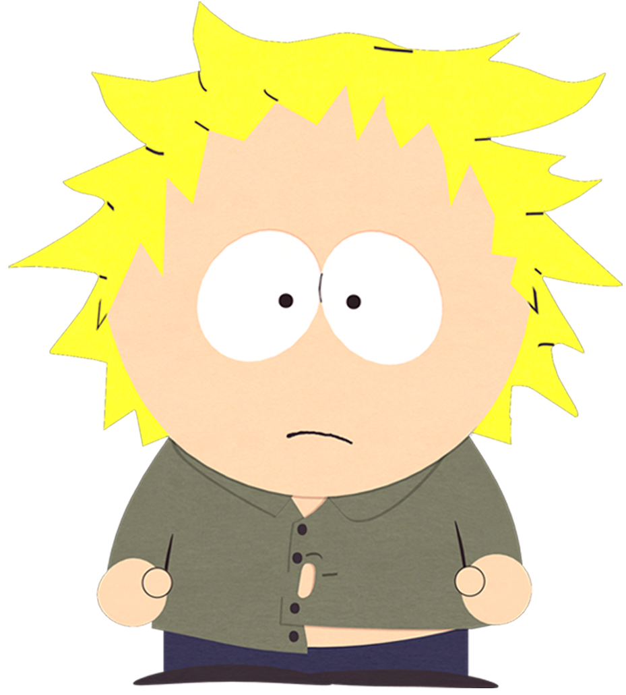

 Creado por Matt Stone, es un personaje ficticio en la serie animada South Park. Tweek Tweak es un estudiante de la Escuela Primaria de South Park. Bebe mucho café, lo que causa paranoia y espasmos musculares.
Tweek Tweak es un personaje ficticio en la serie animada South Park. Presentado al final de la segunda temporada, es un niño altamente activo.